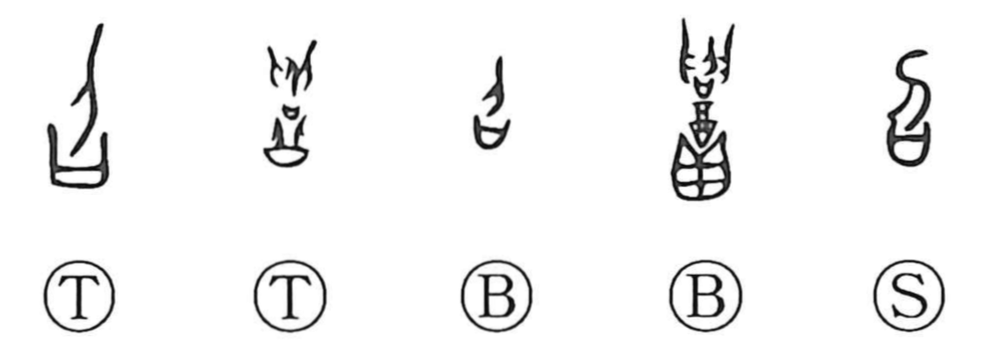

Explanation
Shirakawa sees 召 as a compound showing a person descending from above set over a mouth-shaped ritual receptacle (sai), a container for covenant or prayer writings. The graph depicts placing a petition and, in answer, the spirit of the dead descending to the altar, which gives the core sense of calling down and summoning a spirit. In early Zhou bronze inscriptions, the graph in the name of Duke Zhao (shao) appears with scenes of wine offerings, prayer, and the welcoming of the descending spirit, marking him as a ritual specialist who anticipated divine descent. From this cultic nucleus, related forms unfold naturally: adding “hand” yields 招, the physical act of beckoning; adding “speech” gives 詔, a transmitted message from the summoned deity. Graphs such as 各 express a deity’s descent from heaven, while 客 portrays a ‘guest deity’ entering the ancestral hall. From summoning gods, the meaning broadened to inviting or calling people.